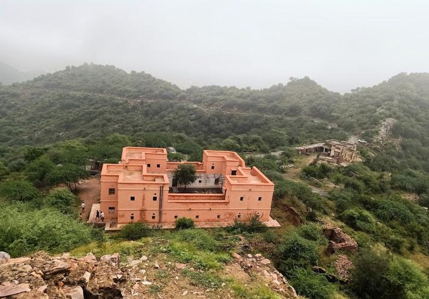
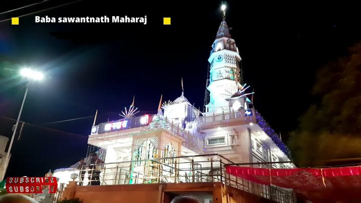
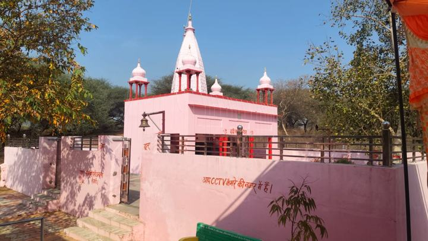

Founded in Samvat 1454, home of Baba Sawanth Nath, and a village that serves the nation.
सम्वत 1454 में स्थापित, बाबा सावंतनाथ की तपोभूमि, और देश की सेवा करने वाला गांव।
Village historyगांव का इतिहास
Dalanwas has a long and proud history. The settlement began at Pitampura (Delhi), moved to Chandaliya, and finally reached its present location.
गांव डालनवास का इतिहास अत्यंत गौरवशाली है। इसकी बसावट पहले पितमपुरा (दिल्ली), फिर चंडालिया और अंत में वर्तमान स्थान पर हुई।
Samvat 1454सम्वत 1454
The village was founded by Daluram in Samvat 1454. In Samvat 1464, Parvati became Kuwari Sati, a symbol of supreme sacrifice and devotion.
सम्वत 1454 में डालूराम जी द्वारा गांव की स्थापना की गई। सम्वत 1468 में पार्वती ने कुंवारी सती होकर त्याग और बलिदान का अनुपम उदाहरण प्रस्तुत किया।
Spiritual heritageधार्मिक विरासत
Shri Shri 1008 Siddh Shri Baba Sawanth Nath Jiश्री श्री 1008 सिद्ध श्री बाबा सावंतनाथ जी
A native saint, Savant (Savantia), attained spiritual greatness through deep meditation and penance. He is worshipped as Shri Shri 1008 Siddh Shri Baba Sawanth Nath.
गांव के ही निवासी सांवत उर्फ़ सावंतिया कठोर तप के कारण महान सिद्ध पुरुष बने और श्री श्री 1008 सिद्ध श्री बाबा सावंतनाथ के नाम से पूजे जाते हैं।
Temples dedicated to Baba Sawanth Nath stand in Shalewala, Bhirod and Dalanwas, drawing devotees from across the region. Baba took samadhi in Dalanwas, making the village a sacred spiritual centre.
बाबा सांवतनाथ के मंदिर साहलेवाला, बिरोहड़ और डालनवास में स्थित हैं। बाबा ने डालनवास में समाधि ली, जिससे गांव एक पवित्र धार्मिक केंद्र बना।
Social harmonyसामाजिक समरसता
Dalanwas is a symbol of unity and brotherhood. Jats, Brahmins, Sunars, Nais, Khatis, Kumhars, Chhippis, Jogis, Dhanaks and Chamars live together peacefully, respecting each other’s traditions and values.
डालनवास सामाजिक भाईचारे का प्रतीक है। यहां जाट, ब्राह्मण, सुनार, नाई, खाती, कुम्हार, छिप्पी, जोगी, धानक, चमार सभी आपसी प्रेम और सहयोग से रहते हैं।
Education and facilitiesशिक्षा एवं सुविधाएं
The village has a GGSSS school, a sports ground, a public library and Fawara Chowk — facilities that support education, recreation and social development.
गांव में जीजीएसएसएस स्कूल, खेल मैदान, पुस्तकालय और फव्वारा चौक जैसी सुविधाएं हैं, जो शिक्षा, खेल और सामाजिक विकास में सहायक हैं।
Pride and achievementsगौरव और उपलब्धियां
The late Colonel Peerdan Lamba remains a source of immense pride for the village. Today many residents serve as colonels, majors and IPS officers, and several have been honoured with military medals.
गांव के स्वर्गीय कर्नल पीरदान डालनवास की शान रहे हैं। आज भी गांव के लोग कर्नल, मेजर, आईपीएस जैसे उच्च पदों पर कार्यरत हैं और सेना पदकों से सम्मानित हैं।
Many villagers serve in the Indian Army, Haryana Police, Delhi Police, the education sector and other government services.
अनेक ग्रामीण भारतीय सेना, हरियाणा पुलिस, दिल्ली पुलिस और शिक्षा विभाग में सेवाएं दे रहे हैं।
Agriculture and livelihoodकृषि एवं आजीविका
Farmers of Dalanwas earn their living through farming, livestock rearing and vegetable growing. Many villagers also work in private jobs, run their own businesses, or are employed overseas with reputed organisations.
गांव के किसान कृषि, पशुपालन और सब्जी उत्पादन से आजीविका चलाते हैं। कई युवा विदेशों में अच्छे पैकेज पर कार्यरत हैं, और अनेक लोग निजी नौकरी और स्वयं का व्यवसाय कर रहे हैं।
Places to seeदर्शनीय स्थल
Cultural, historical and spiritual landmarks in and around Dalanwas.
डालनवास और आसपास के सांस्कृतिक, ऐतिहासिक और धार्मिक स्थल।

Madhogarh Fortमाधोगढ़ किला
A historic hill fort near Dalanwas with panoramic views of the Aravalli landscape.
डालनवास के पास एक ऐतिहासिक पहाड़ी किला, जहां से अरावली का मनोरम दृश्य दिखता है।
Read moreऔर पढ़ें
Madhogarh Fort stands on Madhogarh Hill in Mahendragarh district. It was built in the first half of the 18th century by Madho Singh I and played an important role in regional defence and trade routes.
माधोगढ़ किला महेंद्रगढ़ जिले में माधोगढ़ पहाड़ी पर स्थित है। इसे 18वीं सदी के पहले भाग में माधो सिंह प्रथम ने बनवाया था और यह क्षेत्रीय सुरक्षा और व्यापार मार्गों में महत्वपूर्ण रहा।
Its Rajput architecture includes thick stone walls and bastions. Although partly in ruins, restoration work is under way to preserve it and attract visitors.
इसकी राजपूत शैली की वास्तुकला में मोटी पत्थर की दीवारें और मजबूत बुर्ज हैं। कुछ हिस्से खंडहर हैं, पर इसे संरक्षित करने का कार्य जारी है।
Visitors enjoy the views, the old structures and the rural life around the fort — a good trip for history and nature lovers.
यहां के मनोरम दृश्य, पुराने ढांचे और आसपास का ग्रामीण जीवन इसे इतिहास और प्रकृति प्रेमियों के लिए खास बनाते हैं।
Pila Johadपीला जोहड़
Pila Johadपीला जोहड़
A traditional water reservoir that reflects the village's water-conservation heritage.
एक पारंपरिक जलाशय, जो गांव की जल-संरक्षण विरासत को दर्शाता है।
Read moreऔर पढ़ें
Pila Johad is known for a local healing legend: people with jaundice who bathe here are said to recover — but only visitors from outside the village.
पीला जोहड़ एक स्थानीय मान्यता के लिए जाना जाता है: कहा जाता है कि पीलिया से पीड़ित व्यक्ति यहां स्नान करे तो ठीक हो जाता है — लेकिन यह केवल गांव के बाहर के लोगों पर लागू होता है।
Greenery surrounds the Johad, and nearby Shani and Shiva temples draw devotees to pray.
जोहड़ के चारों ओर हरियाली है, और पास के शनि और शिव मंदिरों में भक्त पूजा करने आते हैं।

Baba Sawanth Nath Templeबाबा सावंतनाथ मंदिर
A revered place of peace and faith that draws devotees from nearby villages for annual gatherings.
शांति और आस्था का पूज्य स्थल, जहां वार्षिक आयोजनों में आसपास के गांवों से भक्त आते हैं।

Dadi Sati Templeदादी सती मंदिर
A sacred temple at the heart of local religious life and the Dadi Sati Mela.
स्थानीय धार्मिक जीवन और दादी सती मेले का केंद्र, एक पवित्र मंदिर।
Festivals and melasत्योहार और मेले
Baba Sawanth Nath Jagran and Bhandaraबाबा सावंतनाथ जागरण और भंडारा
A vibrant spiritual festival dedicated to Baba Sawanth Nath, celebrating his teachings of devotion, peace and community service. Devotees come from nearby villages and towns.
पूज्य बाबा सावंतनाथ को समर्पित एक भव्य धार्मिक उत्सव, जो भक्ति, शांति और सेवा का संदेश देता है। आसपास के गांवों और शहरों से भक्तजन शामिल होते हैं।
The festival features night-long bhajans, a procession with jhaki (tableaux) of historical and mythological stories, and a grand bhandara where food is served free to hundreds of devotees. It is held every year on auspicious nights of the Hindu calendar.
इसमें रात भर भजन, ऐतिहासिक और पौराणिक कथाओं की झांकियां, और विशाल भंडारा होता है, जिसमें सैकड़ों भक्तों को निःशुल्क भोजन दिया जाता है। यह हर साल हिंदू पंचांग की शुभ रातों में होता है।
Dadi Sati Melaदादी सती मेला
Held in Dalanwas and Gadadwas after Holi, on Dulendi. Here Holi is not played on Dulendi; instead, people worship Dadi Sati — revered like Rani Sati Dadi of Rajasthan, especially in the month of Bhadon.
डालनवास और गादड़वास में होली के बाद दुलेंडी के दिन लगता है। यहां दुलेंडी पर होली नहीं खेली जाती, बल्कि दादी सती की पूजा होती है — जो राजस्थान की रानी सती दादी की तरह पूजी जाती हैं, खासकर भादो मास में।
The mela is dedicated to Rani Sati Dadi, born Narayani, a symbol of devotion and dedication. Devotees visit the temples of Dadi Ji, and wrestling (dangal) and other festivities are organised.
यह मेला रानी सती दादी को समर्पित है, जिनका जन्म नारायणी के रूप में हुआ — भक्ति और समर्पण का प्रतीक। भक्त दादी जी के मंदिरों में पूजा करते हैं, और दंगल व अन्य कार्यक्रम होते हैं।
While preserving its traditions and values, Dalanwas keeps moving forward with a vision of education, self-reliance, unity and sustainable development for future generations.
डालनवास अपनी परंपराओं को संजोते हुए शिक्षा, आत्मनिर्भरता, एकता और सतत विकास के मार्ग पर निरंतर अग्रसर है।